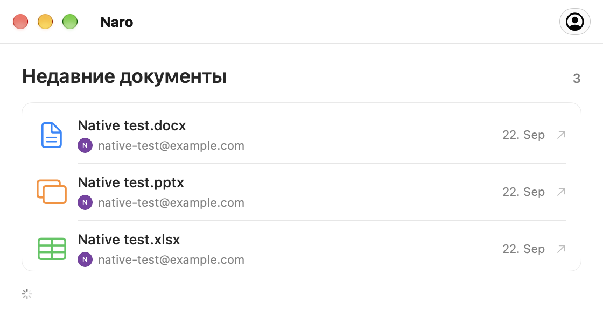

Connect your Google account.
Sign in through your browser, then make Naro the default app for your Office files in its account settings.
Open a Word, Excel, or PowerPoint file from Finder.
Edit in
Google. Keep your changes on your Mac.
In development. A public download is not available yet.



A familiar beginning
Your usual double-click, with Google’s editors on the other side.
Sign in through your browser, then make Naro the default app for your Office files in its account settings.
Naro uploads the file to your Google Drive and opens the matching editor. With multiple accounts, choose an avatar first.
While Naro is running and online, it checks Google’s saved changes and writes them back locally, keeping a backup.
Three editors. One app.
Documents, spreadsheets, and presentations. Up to 100 MB per file.
From a local document to Google Docs.
DOC · DOCX
Open your spreadsheets in Google Sheets.
XLS · XLSX
Take your presentations into Google Slides.
PPT · PPTXA native interface with Liquid Glass, recent documents, and a compact account picker. No menu-bar icon to keep around.
Connect personal and work accounts. Pick the account for each file using its profile photo, name, and email.
Documents travel directly between your Mac and Google. Naro has no developer-operated server that receives your documents. Sign-in tokens stay in macOS Keychain.
Good to know
Naro is in development. No public installer has been published yet. This repository is the app’s public information site, not its source code. Release information will appear here when a public build is ready.
Editing happens in Google Docs, Sheets, or Slides in your browser. Naro handles opening files from Finder, choosing an account, and bringing Google’s saved changes back to your Mac.
Naro keeps both versions and asks which one to continue with. It also makes local backups before replacing a document. Keep Naro running and connected to the internet for synchronization.
Compatibility depends on Google’s Office editors. Complex formatting, macros, and other advanced features may not be preserved. If Google upgrades an older DOC, XLS, or PPT file, Naro saves a modern-format copy alongside the original. Converting a file into a separate Google-native document is not tracked by the original file link.
The current development build targets Apple Silicon Macs running macOS 26 or newer. Automatic app updates are planned but are not implemented in the current build.